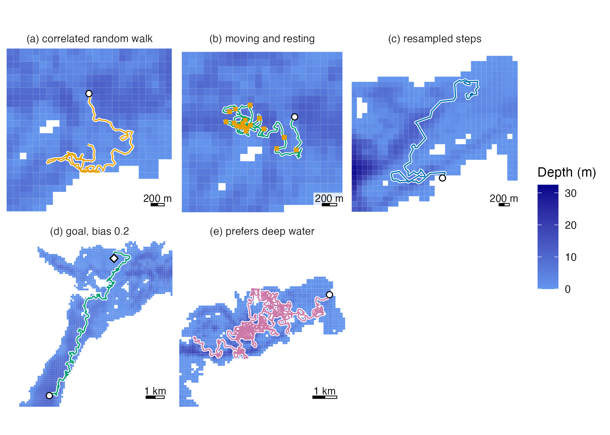
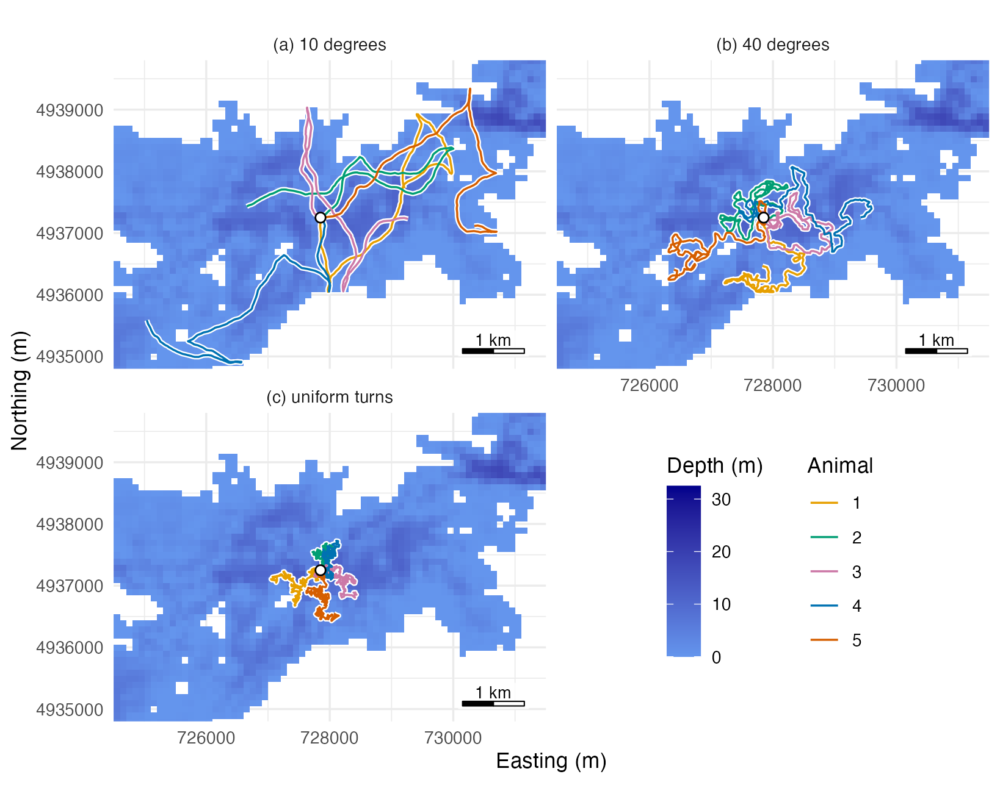
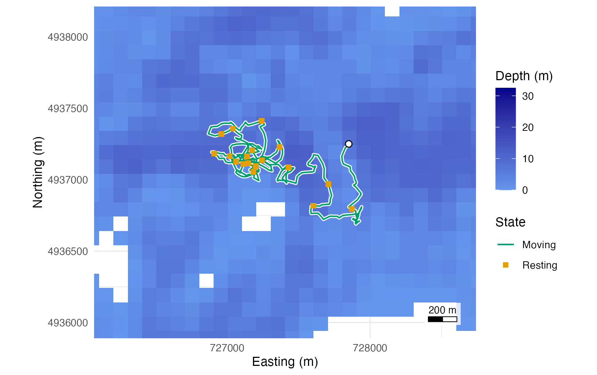
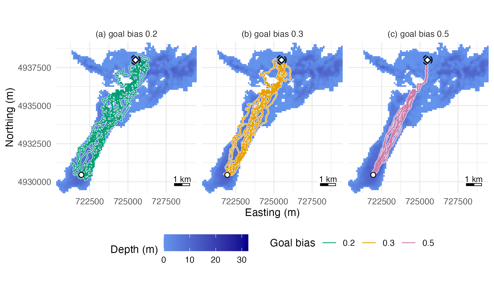
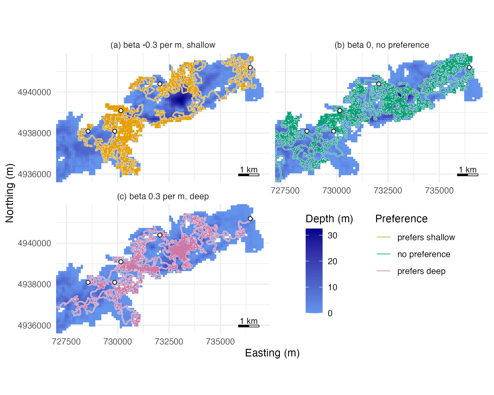
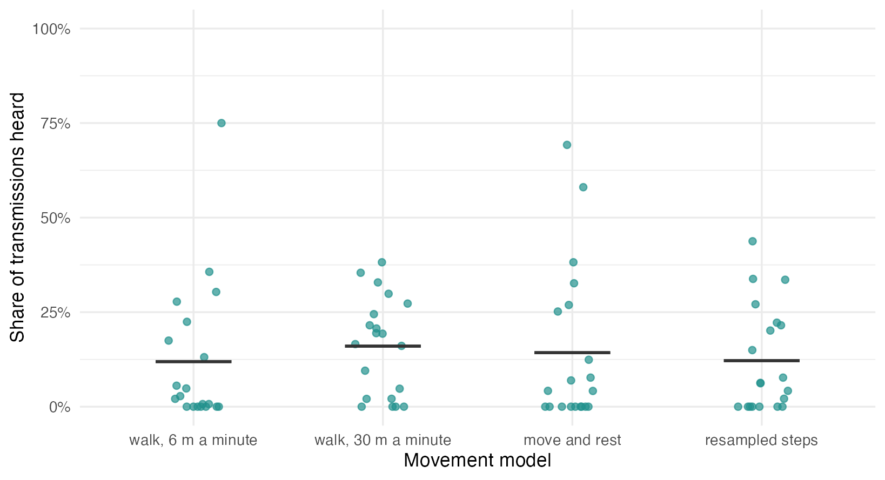

Specifying and testing movement models
movement-models.RmdAn array is scored on simulated animals, and the way they move changes the score. Figure 1 shows one simulated animal under each of the five movement models of this page.

Figure 1. The first simulated animal of a run of each model of sections 1 to 5 on Stoney Lake, each panel zoomed to its track: (a) 4 hours, (b) 8 hours, with squares where it rested, (c) 6 hours, (d) until it reached the goal (diamond) after 10.7 hours, and (e) 48 hours. Circles mark the starts.
This page sets the movement in five ways:
- a correlated random walk from three numbers;
- a switch between moving and resting, with step and turn distributions of your own, such as those of a hidden Markov model fitted to your species;
- a sampler of steps of your own, such as steps you measured;
- a start, a start time and a goal that pulls the animals towards it;
- a preference for a habitat layer, such as bottom depth, of a strength you set.
Each gives a movement model to pass to simulate_tracks()
and evaluate_array(). Section 6 measures how much the
choice changes an array’s score. This page’s code is included as
movement-models.R in
system.file("scripts", package = "arraydesign").
Stoney Lake, Ontario, at 100 m resolution, is the example water body, as in Get started. The first step loads the packages and reads the depth raster.
# Load the package, and ggplot2 for the maps
library(arraydesign)
library(ggplot2)
# Read the depth raster of Stoney Lake
lake <- terra::rast(system.file("extdata", "stoney_depth.tif",
package = "arraydesign"))Depth is zero or negative metres, so the maps take
abs(). depth_map() is a page helper that draws
the water by depth, all of it or the part given by
zoom.
# Take the water cells, with depth as positive metres
water <- terra::as.data.frame(lake, xy = TRUE, na.rm = TRUE)
names(water)[3] <- "depth_m"
water$depth_m <- abs(water$depth_m)
# Draw water by depth, land blank; `zoom` takes the x and y limits of a
# part of the lake, and NULL draws all of it
depth_map <- function(zoom = NULL) {
ggplot(water, aes(x, y)) +
geom_raster(aes(fill = depth_m)) +
detfield::scale_fill_depth() +
coord_equal(xlim = zoom$x, ylim = zoom$y, expand = FALSE) +
labs(x = "Easting (m)", y = "Northing (m)") +
detfield::annotation_scale_bar(location = "br") +
detfield::theme_positionr()
}What a movement model holds
A movement model has four parts:
- a function that draws step lengths in metres;
- a function that draws turning angles in radians;
- the time one step takes, in seconds;
- a line saying where the numbers came from.
simulate_tracks() calls the two functions, turns the
animal by the angle and moves it by the step. A step that meets the
shore is reflected off it, so no track crosses land. The source line is
printed with the model and kept with every simulation made from it.
1. A correlated random walk from three numbers
crw_model() takes step lengths from a gamma distribution
with the mean and standard deviation you give, per time step. It draws
turning angles from a normal distribution centred on zero and wrapped to
the circle. A small turning spread gives straight paths;
turn_sd = Inf gives a walk with no memory of its heading.
The walk of the arraydesignR
R package, which runs arraydesign in a browser, and of
evaluate_array() moves a mean of 30 m a minute, 0.5 m/s,
with turns of standard deviation 40 degrees. The print gives the model
and its source line.
# Build a walk: gamma steps of mean 30 m and sd 15 m per 60 s, turns of
# sd 40 degrees
walk <- crw_model(step_mean = 30, step_sd = 15, turn_sd = 40, time_step_s = 60)
walk
#> <movement_model> 1 state
#> time step: 60 s
#> source: crw_model(): gamma steps, mean 30 m and sd 15 m per 60 s; wrapped
#> normal turns, sd 40 degreesTo see what steps the walk draws, the next chunk draws 10,000 of them and summarises their lengths in metres.
# Draw 10,000 step lengths from the walk, m per 60 s
set.seed(1)
step_draws <- walk$step(10000)
summary(step_draws)
#> Min. 1st Qu. Median Mean 3rd Qu. Max.
#> 1.085 18.936 27.481 30.029 38.548 168.330These are starting values; no species was measured to set them. The
next chunk releases five animals together in the middle of the lake
under three turning spreads: 10 degrees, 40 degrees and uniform turns.
track_control(start = ...) sets the release point; section
4 shows its other settings.
# Set a release point in the middle of the lake
middle <- data.frame(x = 727850, y = 4937250)
# Set one turning spread per walk, in degrees; Inf gives uniform turns
turn_sds <- c(ten = 10, forty = 40, uniform = Inf)
# Walk five animals for 240 steps of 60 s under each walk
turn_tracks <- lapply(turn_sds, function(turn_sd) {
spread_walk <- crw_model(step_mean = 30, step_sd = 15, turn_sd = turn_sd,
time_step_s = 60)
simulate_tracks(lake, spread_walk, n_animals = 5, n_steps = 240,
control = track_control(start = middle), seed = 1)
})At 10 degrees the animals travel long, straight paths, at 40 they wander, and with uniform turns they stay near the release (Figure 2).
# Name the panels, in the order of turn_sds
panel_names <- c(ten = "(a) 10 degrees", forty = "(b) 40 degrees",
uniform = "(c) uniform turns")
# Stack the three runs in one table, with the panel each is drawn in
spread_paths <- do.call(rbind, lapply(names(turn_tracks), function(spread) {
data.frame(path_id = turn_tracks[[spread]]$path_id,
x = turn_tracks[[spread]]$x, y = turn_tracks[[spread]]$y,
panel = panel_names[[spread]])
}))
# Draw one panel per turning spread over the middle of the lake, each
# track over a white casing
depth_map(zoom = list(x = c(724500, 731500), y = c(4934800, 4939800))) +
geom_path(data = spread_paths, aes(group = path_id), colour = "white",
linewidth = 1.2) +
geom_path(data = spread_paths, aes(group = path_id, colour = factor(path_id)),
linewidth = 0.5) +
geom_point(data = middle, shape = 21, fill = "white", colour = "black",
size = 2, stroke = 0.6) +
scale_colour_tracks(name = "Animal") +
facet_wrap(~panel, ncol = 2) +
theme(legend.position = "inside", legend.position.inside = c(0.75, 0.25),
legend.box = "horizontal")
Figure 2. Tracks of five simulated animals over 4 hours, released together at one point (circle) in the middle of Stoney Lake, under a correlated random walk with a turning-angle standard deviation of (a) 10 degrees, (b) 40 degrees and (c) uniform turns.
attr(tracks, "escapes") counts, per animal, the steps
taken as drawn, reflected at the shore, held in place, and still. A
model whose steps are too long for the water body, or in the wrong
units, gives many reflections. Here are the counts of the run with
uniform turns:
# Count the steps per animal: as drawn, reflected, held and still
attr(turn_tracks$uniform, "escapes")
#> path_id clear reflected held still
#> 1 1 237 3 0 0
#> 2 2 240 0 0 0
#> 3 3 240 0 0 0
#> 4 4 240 0 0 0
#> 5 5 240 0 0 02. Moving and resting
Many animals alternate between moving and resting.
movement_model() takes any pair of samplers. With
states = 2 and a 2 by 2 transition matrix, the animal
switches between moving with the samplers (state 1) and staying in place
(state 2). Rows are the state at one step and columns the state at the
next; each row sums to 1. A state kept with probability p
lasts a mean of 1 / (1 - p) steps, which the model
prints.
A hidden Markov model fitted with the moveHMM or
momentuHMM R package can have gamma step lengths and
wrapped Cauchy turning angles in its moving state. The wrapped Cauchy
needs no extra package: a Cauchy draw with scale -log(rho),
wrapped to the circle, has concentration rho. The values
below are illustrative; use the estimates of your own fit, in metres per
time step of that fit. The first chunk writes the two samplers.
# Set the moving-state estimates: mean and sd of step length (m per 60 s)
# and the concentration of the turning angles
hmm_step_mean <- 25
hmm_step_sd <- 15
hmm_rho <- 0.6
# Draw gamma step lengths with that mean and sd
gamma_steps <- function(n_draws) {
stats::rgamma(n_draws, shape = (hmm_step_mean / hmm_step_sd)^2,
rate = hmm_step_mean / hmm_step_sd^2)
}
# Draw wrapped Cauchy turning angles with concentration rho
wrapped_cauchy <- function(n_draws) {
(stats::rcauchy(n_draws, 0, -log(hmm_rho)) + pi) %% (2 * pi) - pi
}movement_model() joins the samplers, the time step and
the transition matrix. The print gives the mean time in each state.
# Set the transition matrix: rows are the state at one step, columns the
# state at the next (1 moving, 2 resting)
move_rest <- matrix(c(0.95, 0.05, # moving: keep moving 0.95, rest 0.05
0.10, 0.90), # resting: move 0.10, keep resting 0.90
nrow = 2, byrow = TRUE)
# Move with the samplers (state 1) or rest (state 2)
hmm_model <- movement_model(
step = gamma_steps, turn = wrapped_cauchy, time_step_s = 60,
states = 2, transition = move_rest,
source = paste("HMM, illustrative values: gamma steps 25 m (sd 15)",
"per 60 s, wrapped Cauchy turns rho 0.6, and rest")
)
hmm_model
#> <movement_model> 2 states (move, rest)
#> time step: 60 s
#> mean steps in a state: move 20.0, rest 10.0
#> source: HMM, illustrative values: gamma steps 25 m (sd 15) per 60 s,
#> wrapped Cauchy turns rho 0.6, and restcrw_model() takes the same matrix for a correlated
random walk that rests:
crw_model(30, 15, 40, transition = move_rest). One animal
walks for 8 hours under the two-state model. The state
column of the tracks gives the state of the step that ends at each
position, 1 moving and 2 resting.
# Walk one animal for 480 steps of 60 s from the middle of the lake
two_state <- simulate_tracks(lake, hmm_model, n_animals = 1, n_steps = 480,
control = track_control(start = middle), seed = 4)
# Count the positions in each state
table(two_state$state)
#>
#> 1 2
#> 334 147A resting animal stays where it is, so its resting positions fall at few places. The next chunk counts them.
# Take every position of the track, and those at which the animal rested
positions <- data.frame(x = two_state$x, y = two_state$y)
resting <- positions[two_state$state == 2, ]
# Count the resting positions, and the places at which the animal rested
nrow(resting)
#> [1] 147
nrow(unique(resting))
#> [1] 18Over 8 hours the animal rested at 147 of its 481 positions, at 18 places (Figure 3).
# Map the track over a white casing in the moving colour, the resting
# positions on top as squares in the resting colour, and the start, zoomed
# to the track
depth_map(zoom = list(x = range(two_state$x) + c(-800, 800),
y = range(two_state$y) + c(-800, 800))) +
geom_path(data = positions, colour = "white", linewidth = 1.4) +
geom_path(data = positions, aes(colour = "Moving"), linewidth = 0.6) +
geom_point(data = resting, aes(colour = "Resting"), shape = 15, size = 1.8) +
geom_point(data = positions[1, ], shape = 21, fill = "white",
colour = "black", size = 2.2, stroke = 0.6) +
scale_colour_tracks(name = "State",
colours = c(Moving = "bluish_green", Resting = "orange")) +
guides(colour = guide_legend(override.aes = list(linetype = c(1, 0),
shape = c(NA, 15))))
Figure 3. Track of one simulated animal over 8 hours from its start (circle) under the two-state model, moving for a mean of 20 steps, then resting for a mean of 10.
3. A sampler of your own
The two functions can be anything that takes a number of draws,
n_draws, and returns that many numbers: step lengths of 0
or more, and turning angles in radians. One route is to resample steps
you measured, such as the distances between positions of your own tagged
animals at a fixed interval. The twelve steps below are example values;
replace them with your own.
# Enter twelve measured steps, m per 180 s
my_steps <- c(12, 34, 8, 56, 120, 44, 19, 73, 33, 251, 62, 28)
# Resample the steps; turn up to 90 degrees either way
own_model <- movement_model(
step = function(n_draws) sample(my_steps, n_draws, replace = TRUE),
turn = function(n_draws) stats::runif(n_draws, -pi / 2, pi / 2),
time_step_s = 180,
source = "twelve example steps per 180 s, resampled; turns up to 90 degrees"
)
own_model
#> <movement_model> 1 state
#> time step: 180 s
#> source: twelve example steps per 180 s, resampled; turns up to 90 degreesmovement_model() tests each sampler before it returns,
and stops on one that gives the wrong number of values or a negative
step. A common error is to draw one value where n_draws are
needed:
# Try a step sampler that ignores n_draws and draws one value
try(movement_model(
step = function(n_draws) stats::rgamma(1, shape = 2, rate = 0.1),
turn = function(n_draws) stats::runif(n_draws, -pi, pi)
))
#> Error : `step`(5) must return 5 finite numbers of at least 0.Use n_draws in every draw. evaluate_array()
also needs a whole number of steps in an hour, so the time step must
divide 3600 s. Choose a time step such as 60, 120, 180, 300 or 600 s,
and give the step lengths for that time step.
The next chunk sets up the 20-receiver grid and the assumed range model of Get started, which section 6 uses.
# Lay the 20-receiver grid of Get started over water at least 1 m deep
deployable <- terra::ifel(abs(lake) < 1, NA, lake)
receivers <- place_receivers(deployable, n = 20, method = "grid", seed = 1)
# Set the assumed range model: d50 and d05 for receivers 1 m and 35 m deep
range_model <- detfield::de_logistic(d50 = c(250, 750), d05 = c(500, 1500),
depth = c(1, 35))4. Goal-oriented movement
By default each animal starts at the centre of a random water cell,
at midnight UTC on 1 January 2025. track_control() sets the
start positions and the start time. It can also add a goal, such as a
spawning site, that pulls every animal towards it:
-
goal: one point on water; -
goal_bias: the weight of the bearing to the goal against the bearing of the walk, from 0, which ignores the goal, to 1, which heads straight for it; -
goal_tolerance: the distance at which an animal has arrived; it then stays at the goal. The default is one cell.
Here ten animals are released together in the south-west arm of the lake at 06:00 UTC on 1 June. They move by the walk of section 1 towards a shallow bay on the north shore. An animal within 300 m of the goal has arrived. The first chunk sets the release, the goal and the start time.
# Set a release point in the south-west arm and a goal on the north shore
release <- data.frame(x = 721950, y = 4930450)
goal <- data.frame(x = 725500, y = 4938000)
start_time <- as.POSIXct("2025-06-01 06:00:00", tz = "UTC")
# Compute the straight-line distance from the release to the goal, m
sqrt((goal$x - release$x)^2 + (goal$y - release$y)^2)
#> [1] 8342.961The goal is 8.3 km from the release in a straight line. The run is made at goal biases of 0.2, 0.3 and 0.5, for up to 24 hours each. The chunk returns one set of tracks per bias and prints the time span of the first.
# Set the goal biases to compare
biases <- c(a = 0.2, b = 0.3, c = 0.5)
# Walk ten animals for 1,440 steps of 60 s at each bias
goal_tracks <- lapply(biases, function(bias) {
control <- track_control(start = release, goal = goal, goal_bias = bias,
goal_tolerance = 300, start_time = start_time)
simulate_tracks(lake, walk, n_animals = 10, n_steps = 1440, control = control,
seed = 1)
})
# Print the first and last time of the run at a bias of 0.2
range(goal_tracks$a$time)
#> [1] "2025-06-01 06:00:00 UTC" "2025-06-02 06:00:00 UTC"arrived gives the step at which each animal reached the
goal, NA if it did not.
# Take the step of arrival of each animal, at each bias
arrived <- lapply(goal_tracks, attr, "arrived")
arrived
#> $a
#> [1] 644 700 714 498 806 507 700 748 742 686
#>
#> $b
#> [1] 1044 743 549 379 474 449 404 569 664 416
#>
#> $c
#> [1] NA 955 NA 300 NA NA NA 313 NA NAWith a goal bias of 0.2, all 10 animals arrive, after 8.3 to 13.4 hours (Figure 4, panel a).
The pull acts on the heading only, so a strong pull can hold an animal against the shore where the straight line to the goal crosses land. The check below asks how often that happened: the share of moving steps reflected at the shore, at each bias.
# Compute the share of moving steps reflected at the shore, per bias
reflected_share <- sapply(goal_tracks, function(tracks) {
escapes <- attr(tracks, "escapes")
sum(escapes$reflected) / sum(escapes$clear, escapes$reflected, escapes$held)
})
round(reflected_share, 3)
#> a b c
#> 0.021 0.070 0.472At a bias of 0.3 all 10 animals still arrived and 7% of moving steps
were reflected, against 2% at 0.2. At 0.5, 7 of 10 animals were held on
the shore and 47% of moving steps were reflected. On this lake, keep the
bias at 0.3 or lower; where a goal lies behind a peninsula, check
arrived and the reflected share before you use a stronger
pull.
# Draw a circle of 300 m round the goal, the arrival distance
angle <- seq(0, 2 * pi, length.out = 100)
arrival_ring <- data.frame(x = goal$x + 300 * cos(angle),
y = goal$y + 300 * sin(angle))
# Stack the tracks of the three biases, with the panel each is drawn in
bias_paths <- do.call(rbind, lapply(names(biases), function(run) {
data.frame(as.data.frame(goal_tracks[[run]])[c("path_id", "x", "y")],
bias = as.character(biases[[run]]),
panel = sprintf("(%s) goal bias %s", run, biases[[run]]))
}))
# Map the tracks over the west half of the lake, one panel and one colour
# per bias, each track over a white casing
goal_map <- depth_map(zoom = list(x = c(720300, 729500),
y = c(4929240, 4939200))) +
geom_path(data = bias_paths, aes(group = path_id), colour = "white",
linewidth = 0.8) +
geom_path(data = bias_paths, aes(group = path_id, colour = bias),
linewidth = 0.4) +
scale_colour_tracks(name = "Goal bias",
colours = c("0.2" = "bluish_green", "0.3" = "orange",
"0.5" = "reddish_purple")) +
geom_point(data = release, shape = 21, fill = "white", colour = "black",
size = 2, stroke = 0.6) +
geom_path(data = arrival_ring, linetype = "dashed", colour = "black") +
geom_point(data = goal, shape = 23, size = 2, stroke = 0.8,
colour = "black", fill = "white") +
facet_wrap(~panel, ncol = 3) +
theme(legend.position = "bottom")
goal_map
Figure 4. Tracks of ten simulated animals over up to 24 hours, released together (circle) in the south-west arm of Stoney Lake and pulled towards a goal in a bay on the north shore (diamond; dashed circle: the 300 m arrival distance).
A goal must lie in water that every start can reach.
evaluate_array() releases its animals at random water cells
with no goal, and takes the start time as
control = list(start_time = ...).
5. A preference for a habitat layer
habitat_selection() gives a movement model a preference
for the values of a raster layer. Each step is drawn from the walk of
section 1 and kept with probability proportional to
exp(beta * layer) at its end; a step not kept is drawn
again. The animals select the layer with a known strength,
beta per unit at the scale of one step, so a simulated
study can test whether a habitat analysis recovers it. Here the layer is
bottom depth, and beta = -0.3 per m favours shallow
water.
# Make a layer of bottom depth in positive metres, named for the analysis
depth <- abs(lake)
names(depth) <- "depth_m"
# Give the walk of section 1 a preference for shallow water: a log weight
# of -0.3 per m of bottom depth
shallow_walk <- habitat_selection(walk, depth, beta = -0.3)
shallow_walk
#> <movement_model> 1 state
#> time step: 60 s
#> selection: log weight -0.3 per unit of depth_m (rejection sampling)
#> source: crw_model(): gamma steps, mean 30 m and sd 15 m per 60 s; wrapped
#> normal turns, sd 40 degrees; selection on depth_m: beta -0.3 per unitTwenty animals walk for 48 hours from 20 water cells drawn once. The
print counts the candidate steps drawn and the steps kept;
attr(shallow_tracks, "selection") gives the same counts per
animal.
# Draw 20 release cells on water, used for every run of this section
set.seed(20)
releases <- water[sample(nrow(water), 20), c("x", "y")]
# Walk 20 animals for 2,880 steps of 60 s (48 hours) from those cells
shallow_tracks <- simulate_tracks(lake, shallow_walk, n_animals = 20,
n_steps = 2880,
control = track_control(start = releases),
seed = 1)
shallow_tracks
#> <sim_tracks> 20 animals, 57620 positions, time step 60 s
#> steps: 57600; as drawn 55667, reflected at the shore 1933, held 0, still 0
#> selection: 57600 of 112430 candidates accepted (0.512); longer than the
#> reach 8, above the bound 0, exhausted 0
#> path_id step time x y cell state heading
#> 1 1 0 2025-01-01 00:00:00 736454.0 4941191 1338 1 NA
#> 2 1 1 2025-01-01 00:01:00 736438.8 4941187 1338 1 -1.473353
#> 3 1 2 2025-01-01 00:02:00 736416.6 4941176 1338 1 -2.862182
#> 4 1 3 2025-01-01 00:03:00 736380.8 4941145 1337 1 -2.688757
#> 5 1 4 2025-01-01 00:04:00 736371.9 4941142 1337 1 -2.420545
#> 6 1 5 2025-01-01 00:05:00 736370.7 4941130 1505 1 -2.854271The next chunk walks five of these animals, the first five released
in the eastern part of the lake, under three preferences: for shallow
water, none, and for deep water (beta = 0.3). It prints the
median bottom depth of each run’s positions.
# Take the first five releases in the eastern part of the lake, the area
# of Figure 5, which holds the north-east basin and the deepest water
basin <- list(x = c(727000, 737400), y = c(4935600, 4941900))
basin_releases <- releases[releases$x > basin$x[1] &
releases$y > basin$y[1], ][1:5, ]
# Set three preferences for bottom depth, per m
betas <- c(shallow = -0.3, none = 0, deep = 0.3)
# Walk the five animals for 48 hours under each preference
preference_tracks <- lapply(betas, function(beta) {
simulate_tracks(lake, habitat_selection(walk, depth, beta = beta),
n_animals = 5, n_steps = 2880,
control = track_control(start = basin_releases), seed = 1)
})
# Median bottom depth of the positions of each run, m
depth_values <- terra::values(depth, mat = FALSE)
used_depth <- sapply(preference_tracks, function(tracks) {
median(depth_values[tracks$cell])
})
round(used_depth, 2)
#> shallow none deep
#> 0.63 2.80 8.15From the same five releases, the animals that favour shallow water keep to the margins of the basin and skirt its deep hole, and those that favour deep water gather over it (Figure 5).
# Name the panels, in the order of betas
preference_names <- c(shallow = "(a) beta -0.3 per m, shallow",
none = "(b) beta 0, no preference",
deep = "(c) beta 0.3 per m, deep")
# Stack the three runs, with the panel each is drawn in
preference_paths <- do.call(rbind, lapply(
names(preference_tracks),
function(run) {
data.frame(path_id = preference_tracks[[run]]$path_id,
x = preference_tracks[[run]]$x, y = preference_tracks[[run]]$y,
preference = run, panel = preference_names[[run]])
}
))
# Draw one panel and one colour per preference over the eastern part of
# the lake, each track over a white casing
depth_map(zoom = basin) +
geom_path(data = preference_paths, aes(group = path_id), colour = "white",
linewidth = 0.6) +
geom_path(data = preference_paths,
aes(group = path_id, colour = preference), linewidth = 0.3) +
geom_point(data = basin_releases, shape = 21, fill = "white",
colour = "black", size = 1.6, stroke = 0.5) +
scale_colour_tracks(name = "Preference",
colours = c(shallow = "orange", none = "bluish_green",
deep = "reddish_purple"),
breaks = names(betas),
labels = c("prefers shallow", "no preference",
"prefers deep")) +
facet_wrap(~panel, ncol = 2) +
theme(legend.position = "inside", legend.position.inside = c(0.75, 0.25),
legend.box = "horizontal")
Figure 5. Tracks of five simulated animals over 48 hours from the same five release points (circles) in the eastern part of Stoney Lake, with a preference for bottom depth of (a) -0.3 per m, (b) none and (c) 0.3 per m.
available_steps() checks the truth on the tracks
themselves. For each step an animal took it draws 10 control steps from
the same walk, from the same start and heading, and reads the depth at
each end. A conditional logit of the step taken against its controls
estimates beta; the survival R package
fits it.
# Draw 10 control steps for each step of the 20 animals
shallow_steps <- available_steps(shallow_tracks, n = 10, seed = 2)
head(shallow_steps)
#> path_id step stratum case x y cell depth_m step_length
#> 1 1 1 1 1 736438.8 4941187 1338 1.819903 15.83438
#> 2 1 1 1 0 736446.5 4941178 1338 1.819903 15.17355
#> 3 1 1 1 0 736459.1 4941178 1338 1.819903 14.48830
#> 4 1 1 1 0 736450.8 4941179 1338 1.819903 12.78524
#> 5 1 1 1 0 736426.1 4941195 1338 1.819903 28.04219
#> 6 1 1 1 0 736456.6 4941174 1338 1.819903 17.23459The model is fitted to each animal on its own, so the animal is the replicate.
# Attach survival; clogit() reads a bare strata() term
library(survival)
# Fit a conditional logit per animal: step taken (case 1) against controls
per_animal <- do.call(rbind, lapply(
split(shallow_steps, shallow_steps$path_id),
function(steps) {
fit <- clogit(case ~ depth_m + strata(stratum), data = steps)
data.frame(path_id = steps$path_id[1], estimate = unname(coef(fit)),
se = sqrt(unname(diag(vcov(fit)))))
}
))
head(per_animal)
#> path_id estimate se
#> 1 1 -0.3054991 0.02030695
#> 2 2 -0.3021150 0.03331970
#> 3 3 -0.3208203 0.02737702
#> 4 4 -0.2704576 0.03046574
#> 5 5 -0.2891964 0.03342718
#> 6 6 -0.2853958 0.01902921The next chunk sets the mean of the 20 estimates, with a 95% interval
from their spread, against the beta of the model, and
counts the animals whose own 95% interval holds it.
# Mean across animals and its 95% interval, t on 19 degrees of freedom
mean_estimate <- mean(per_animal$estimate)
half_width <- qt(0.975, 19) * sd(per_animal$estimate) / sqrt(20)
round(c(beta = -0.3, mean = mean_estimate,
lower = mean_estimate - half_width,
upper = mean_estimate + half_width), 3)
#> beta mean lower upper
#> -0.300 -0.292 -0.306 -0.277
# Count the animals whose 95% interval holds beta
covered <- sum(abs(per_animal$estimate + 0.3) <=
qnorm(0.975) * per_animal$se)
covered
#> [1] 19The 20 animals give a mean of -0.292 per m (95% interval -0.306 to -0.277) against the -0.3 of the model, and the intervals of 19 of 20 animals hold -0.3. The coefficient applies at the scale of one step. A fit to positions an hour apart compares places farther apart, so it need not return the same number; test it against a fit to the true track at that scale.
6. How much the movement model changes the score
The 20-receiver grid is scored with the example’s assumed range model and the reference run of arraydesignR (20 animals for 6 hours, a delay of 120 to 180 s) under four movement models: a slow walk of 6 m a minute, the walk of section 1, the two-state model of section 2, and the resampled steps of section 3. The chunk returns one evaluation per model.
# Build a slow walk: 6 m a minute
slow_walk <- crw_model(step_mean = 6, step_sd = 4, turn_sd = 40,
time_step_s = 60)
# Name the four movement models
models <- list(slow = slow_walk, crw = walk, two_state = hmm_model,
own_steps = own_model)
# Evaluate the grid under each
evaluations <- lapply(models, function(model) {
evaluate_array(receivers, lake, range_model, n_animals = 20,
seed = 1,
control = list(hours = 6, tag_delay = c(120, 180),
movement = model))
})The next chunk tabulates the detection rate of each animal under each model.
# Tabulate the detection rate, one row per model and animal
rates <- do.call(rbind, lapply(names(evaluations), function(model) {
sent <- evaluations[[model]]$detections$transmissions
rate <- tapply(sent$n_detections > 0, sent$path_id, mean)
data.frame(movement = model, animal_id = names(rate),
rate = as.vector(rate))
}))
head(rates)
#> movement animal_id rate
#> 1 slow 1 0.02797203
#> 2 slow 2 0.04827586
#> 3 slow 3 0.00000000
#> 4 slow 4 0.00000000
#> 5 slow 5 0.05555556
#> 6 slow 6 0.30344828The table summarises them per model, beside the positioning error and the hit rate.
# Tabulate detection, positioning error and hit rate, one row per model
by_model <- do.call(rbind, lapply(names(evaluations), function(model) {
overall <- evaluations[[model]]$score$overall
model_rates <- rates$rate[rates$movement == model]
data.frame(movement = model, mean_rate = round(mean(model_rates), 3),
never_heard = sum(model_rates == 0),
median_error_m = round(overall$median_error_mean_m),
hit_rate = round(overall$hit_rate, 3))
}))
by_model
#> movement mean_rate never_heard median_error_m hit_rate
#> 1 slow 0.119 7 505 0.854
#> 2 crw 0.160 4 394 0.547
#> 3 two_state 0.143 9 343 0.795
#> 4 own_steps 0.122 7 382 0.589The slow walk leaves 7 of 20 animals never heard, against 4 under the walk of 30 m a minute (Figure 6). A slow animal that starts far from a receiver may never come within range in six hours, while one that starts near a receiver is heard often.
# Name each model in words on the axis
model_names <- c(slow = "walk, 6 m a minute", crw = "walk, 30 m a minute",
two_state = "move and rest", own_steps = "resampled steps")
rates$movement <- factor(model_names[rates$movement], levels = model_names)
# Compute the mean rate per model, to draw as a bar
means <- aggregate(rate ~ movement, data = rates, FUN = mean)
# Draw one point per animal, spread sideways, and the mean per model
ggplot(rates, aes(movement, rate)) +
geom_point(position = position_jitter(width = 0.15, height = 0, seed = 1),
colour = "#21908C", alpha = 0.7, size = 1.6) +
geom_errorbar(data = means, aes(ymin = rate, ymax = rate), width = 0.4,
colour = "grey20", linewidth = 0.8) +
scale_y_continuous(labels = function(share) sprintf("%g%%", 100 * share),
limits = c(0, 1)) +
labs(x = "Movement model", y = "Share of transmissions heard") +
detfield::theme_positionr()
Figure 6. Share of transmissions heard by at least one receiver of the 20-receiver grid for each of 20 simulated animals over 6 hours, under four movement models. Bars mark the mean across animals. All four runs release the animals at the same 20 points.
The hit rate is 0.547 for the walk of 30 m a minute and 0.854 for 6 m a minute. The location surface for an hour assumes the animal stayed in one place, so the 95% regions of faster animals hold the truth less often.
Score a design with a movement model as close to your species as you can set, and with a slower and a faster one beside it, to see how far the result depends on the choice.